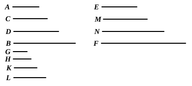
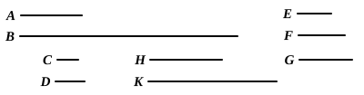
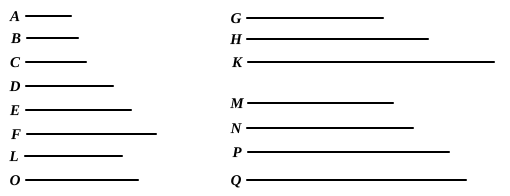
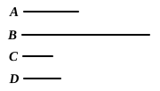
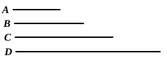
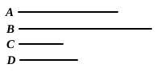

BOOK VIII. PROPOSITIONS.¶
Proposition VIII.1
If there be as many numbers as we please in continued proportion, and the extremes of them be prime to one another, the numbers are the least of those which have the same ratio with them.
Proposition VIII.2
To find numbers in continued proportion, as many as may be prescribed, and the least that are in a given ratio.
Proposition VIII.3
If as many numbers as we please in continued proportion be the least of those which have the same ratio with them, the extremes of them are prime to one another.
Proposition VIII.4
Given as many ratios as we please in least numbers, to find numbers in continued proportion which are the least in the given ratios.
Proposition VIII.5
Plane numbers have to one another the ratio compounded of the ratios of their sides.
Proposition VIII.6
If there be as many numbers as we please in continued proportion, and the first do not measure the second, neither will any other measure any other.
Proposition VIII.7
If there be as many numbers as we please in continued proportion, and the first measure the last, it will measure the second also.

Proposition VIII.8
If between two numbers there fall numbers in continued proportion with them, then, however many numbers fall between them in continued proportion, so many will also fall in continued proportion between the numbers which have the same ratio with the original numbers.
Proposition VIII.9
If two numbers be prime to one another, and numbers fall between them in continued proportion, then, however many numbers fall between them in continued proportion, so many will also fall between each of them and an unit in continued proportion.
Proposition VIII.10
If numbers fall between each of two numbers and an unit in continued proportion, however many numbers fall between each of them and an unit in continued proportion, so many also will fall between the numbers themselves in continued proportion.
Proposition VIII.11
Between two square numbers there is one mean proportional number, and the square has to the square the ratio duplicate of that which the side has to the side.

Proposition VIII.12
Between two cube numbers there are two mean proportional numbers, and the cube has to the cube the ratio triplicate of that which the side has to the side.

Proposition VIII.13
If there be as many numbers as we please in continued proportion, and each by multiplying itself make some number, the products will be proportional; and, if the original numbers by multiplying the products make certain numbers, the latter will also be proportional.
Proposition VIII.14
If a square measure a square, the side will also measure the side; and, if the side measure the side, the square will also measure the square.
Proposition VIII.15
If a cube number measure a cube number, the side will also measure the side; and, if the side measure the side, the cube will also measure the cube.

Proposition VIII.16
If a square number do not measure a square number, neither will the side measure the side; and, if the side do not measure the side, neither will the square measure the square.
Proposition VIII.17
If a cube number do not measure a cube number, neither will the side measure the side; and, if the side do not measure the side, neither will the cube measure the cube.
Proposition VIII.18
Between two similar plane numbers there is one mean proportional number; and the plane number has to the plane number the ratio duplicate of that which the corresponding side has to the corresponding side.
Proposition VIII.19
Between two similar solid numbers there fall two mean proportional numbers; and the solid number has to the similar solid number the ratio triplicate of that which the corresponding side has to the corresponding side.
Proposition VIII.20
If one mean proportional number fall between two numbers, the numbers will be similar plane numbers.
Proposition VIII.21
If two mean proportional numbers fall between two numbers, the numbers are similar solid numbers.
Proposition VIII.22
If three numbers be in continued proportion, and the first be square, the third will also be square.

Proposition VIII.23
If four numbers be in continued proportion, and the first be cube, the fourth will also be cube.

Proposition VIII.24
If two numbers have to one another the ratio which a square number has to a square number, and the first be square, the second will also be square.
Proposition VIII.25
If two numbers have to one another the ratio which a cube number has to a cube number, and the first be cube, the second will also be cube.
Proposition VIII.26
Similar plane numbers have to one another the ratio which a square number has to a square number.
Proposition VIII.27
Similar solid numbers have to one another the ratio which a cube number has to a cube number.